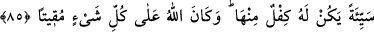
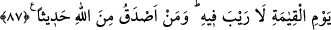

ARACI OLMAK
85- Kim iyi bir işe aracılık ederse onun da o işten bir nasîbi olur. Kim kötü bir işe
aracılık ederse onun da ondan bir payı olur. Allah her şeyi gözetip karşılığını
vericidir.
86- Bir selam ile selamlandığınız zaman siz de ondan daha güzeli ile selamlayın;
yâhut aynı ile karşılık verin. Şüphesiz Allah, her şeyin hesâbını arayandır.
87- Allah –ki O’ndan başka tanrı yoktur- elbette sizi kıyâmet günü toplayacaktır,
bunda aslâ şüphe yoktur. Allah’tan daha doğru sözlü kim olabilir?
“Kim iyi bir işe aracılık ederse onun da o işten bir nasîbi olur.” Bu aracılık etmenin
sevabı ile aracılık sayesinde meydana gelen hayrın sevâbıdır. Güzel aracılık, yâni
şefâat, bu aracılık sâyesinde bir müslümanın hakkının gözetildiği, ondan şerrin
uzaklaştırıldığı, hayrın elde edildiği, Allah rızâsı beklenerek yapılan, karşılığında
rüşvet alınmayan, şer’î cezâlardan biri veyâ herhangi bir hak husûsunda değil, caiz bir
konuda gerçekleşen şefaattir. “Kim kötü bir işe aracılık ederse onun da o ondan” o
işin günâhından hiçbir şey eksiltmeden miktarı ona denk “bir payı olur.” Kötü bir işe
aracılık etmek (şefâat) ise yukarıda zikredilen güzel şefâatın zıddıdır.
Mesrûk’tan rivâyet edildiğine göre o, bir konuda aracılıkta bulundu. Aracılık yaptığı
kimse de kendisine bir câriye hediye etti. Buna kızan Mesrûk: “Şayet kalbindeki niyetini
bilseydim bu ihtiyâcınla ilgili olarak aracılık etmezdim. İhtiyâcının kalan kısmıyla ilgili
olarak da sana aracılık etmiyorum!..” diyerek hediyeyi reddetti.
Zemahşerî’nin belâğatli sözlerinden biri de şöyledir: “İki şey İslam’da insanın
îtibârını zedeler: Hadlerde aracılık etmek ve hükümleri etkileyecek rüşvet vermek veyâ
almaktır.”
Hadler, kulların zarar görmemesi için devlet başkanının Allah Teâlâ’nın hakkı olmak
üzere infâz etmesi gereken belirli cezâlardır. Bu bakımdan ta’zir had değildir. Çünkü
belirli bir sınırı yoktur. En çoğu otuz dokuz kamçı, en azı ise üç kamçıdır. Yine kısasa
da had denmez. Çünkü kısas kulun hakkı olup onun infâzıyla ilgili karar verme yetkisi
kulundur. Bu sebeple affedilmesi yâhut bedel almayı kabul etmesi durumunda kısas